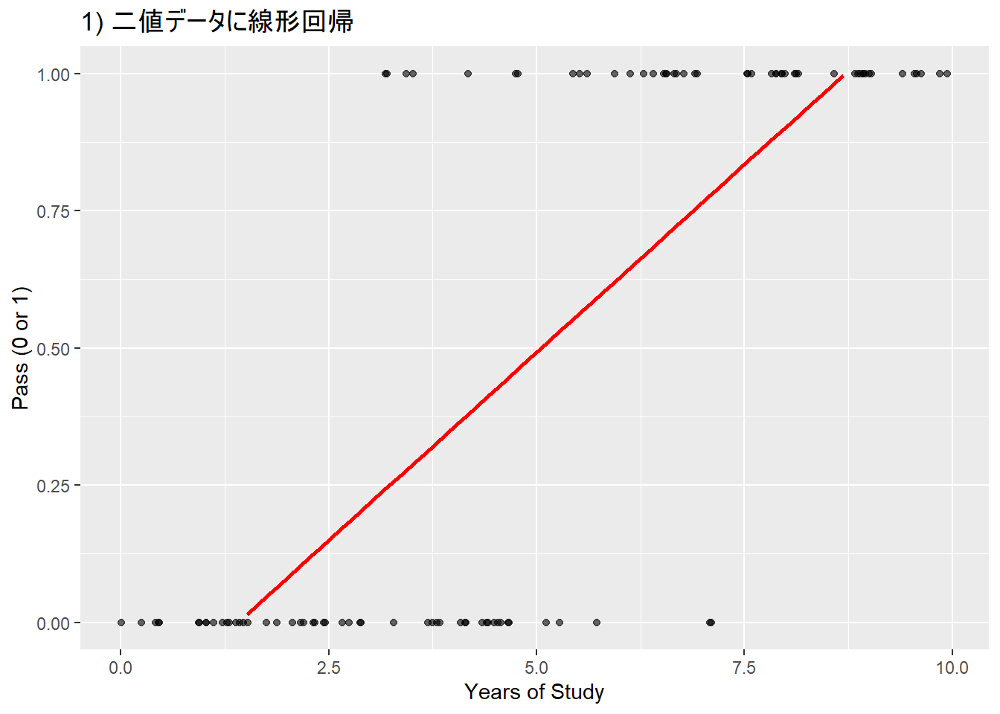
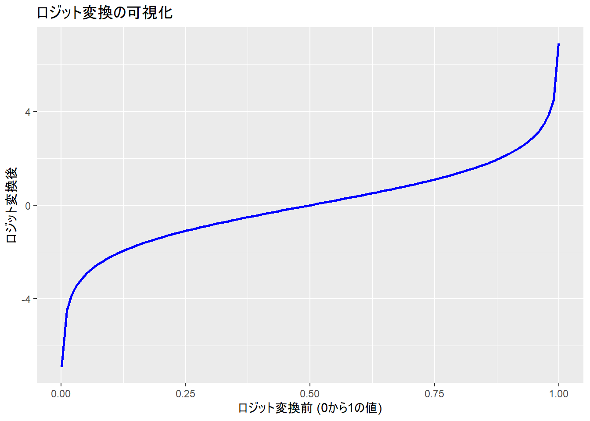
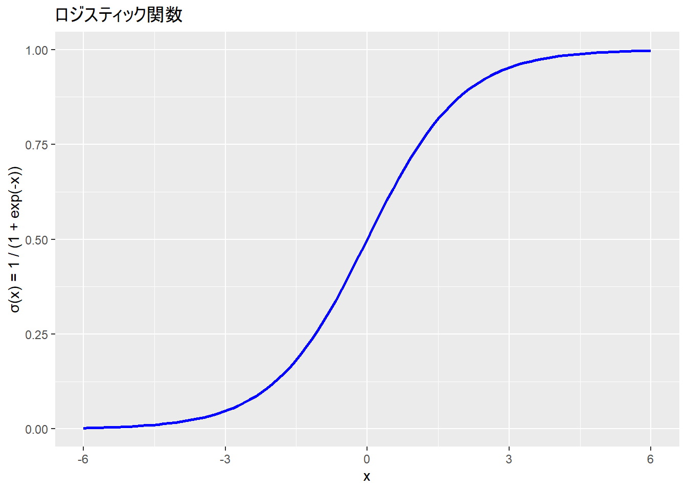
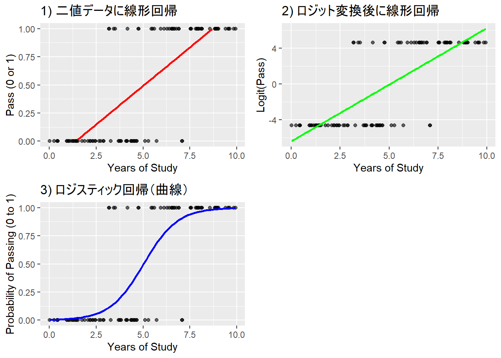
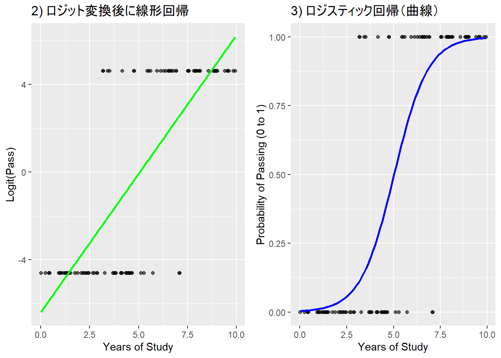
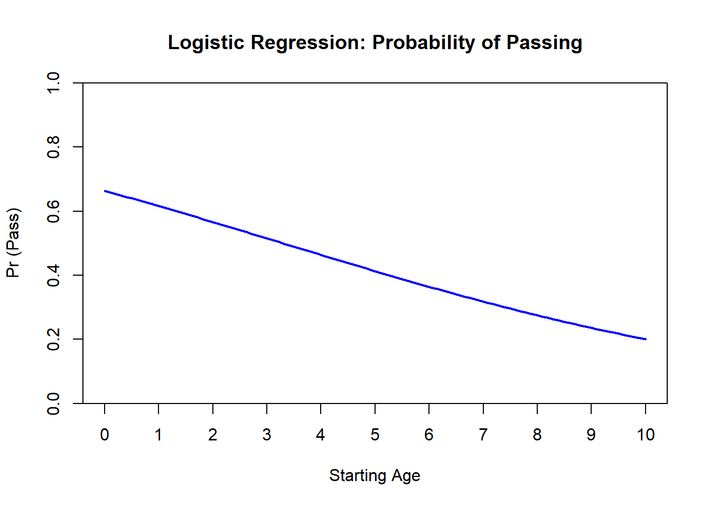
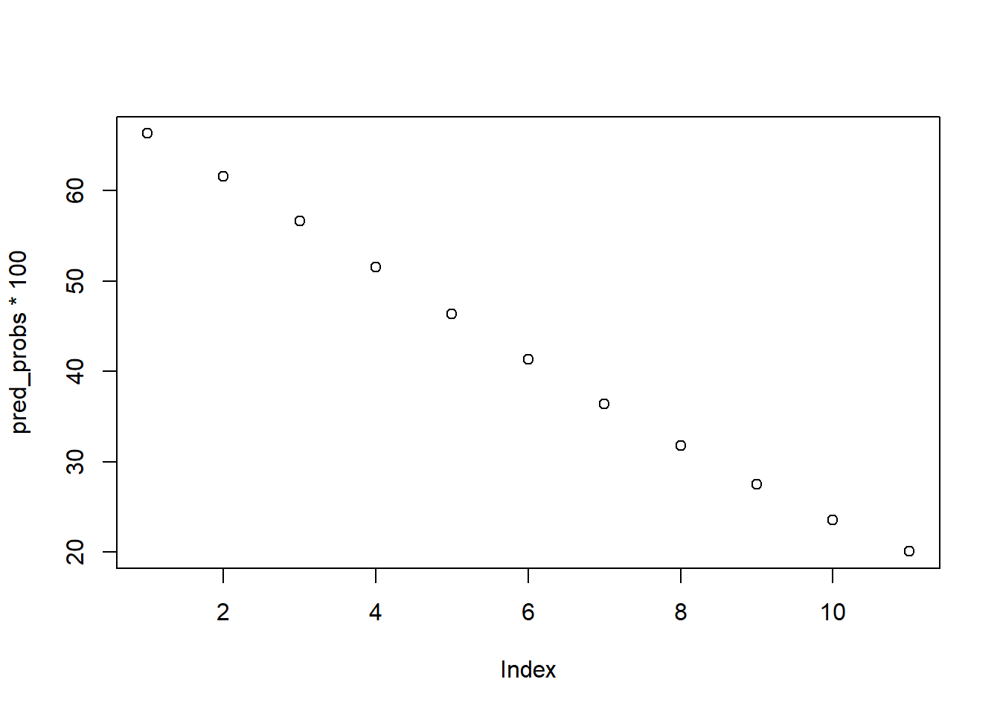
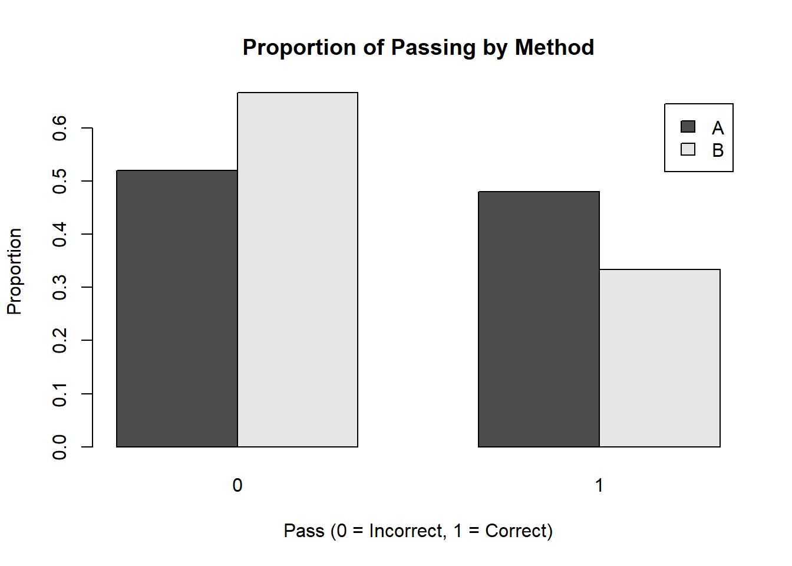
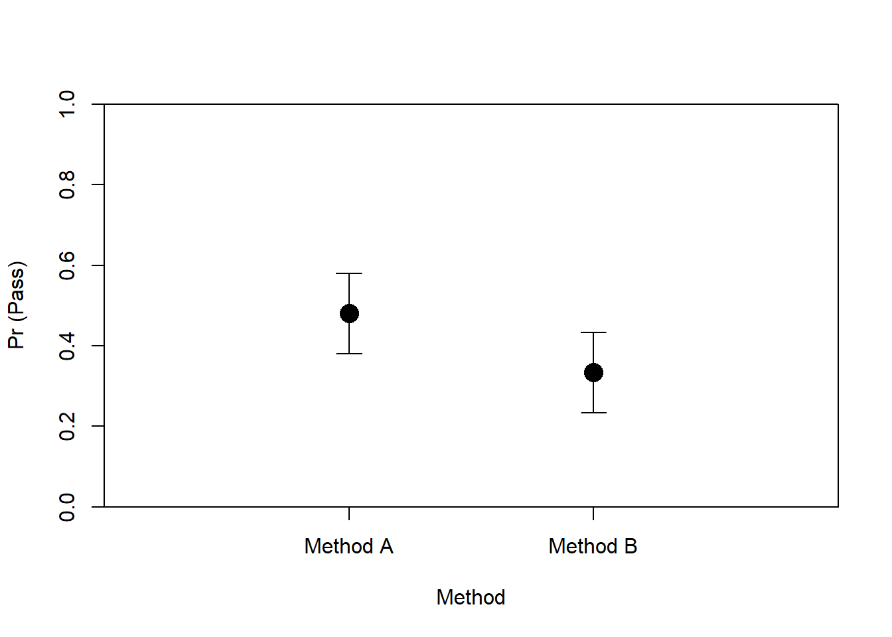
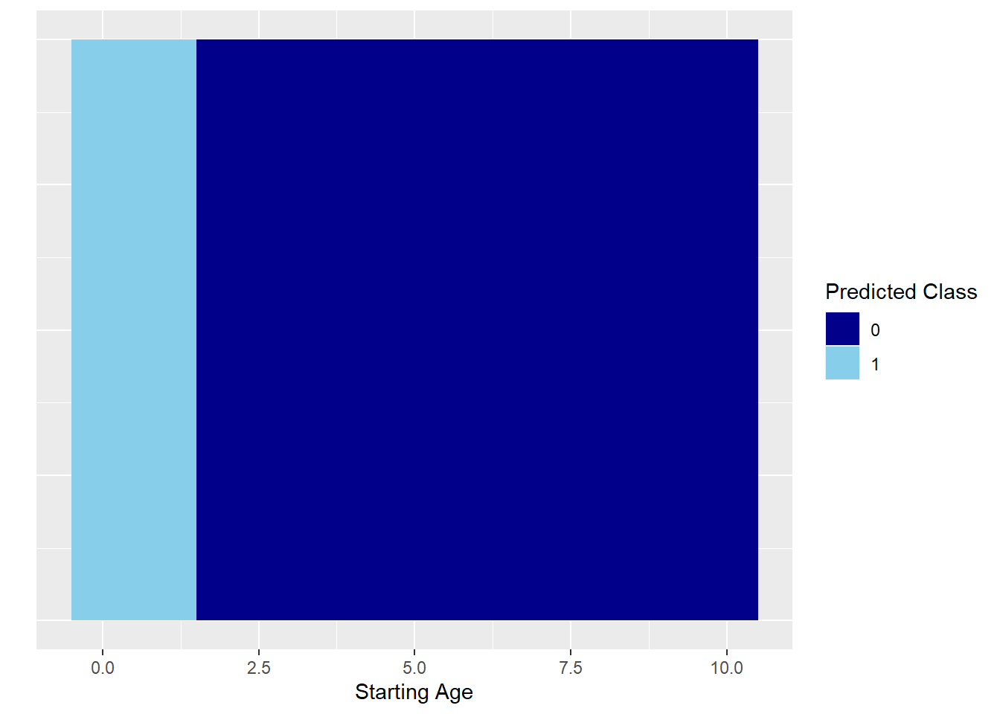

binomial(link = "logit")
gaussian(link = "identity")
Gamma(link = "inverse")
inverse.gaussian(link = "1/mu^2")
poisson(link = "log")
quasi(link = "identity", variance = "constant")
quasibinomial(link = "logit")
quasipoisson(link = "log")Week10: 一般化線形モデル：ロジスティック回帰分析
事前の確認
この講義のRプロジェクトを開いていますか？
英数字で名前を付けた本日の講義のファイルを作成しましたか？
- .Rでも.Rmdでもどちらでも大丈夫です。
今日の目標
- ロジスティク回帰分析を数学的・概念的に理解できる
- ロジスティク回帰分析をRで実装し、その結果を説明できる
一般化線形モデル
確率分布に正規分布以外を仮定する（一般線形モデル = 正規分布を仮定）
世の中には、正規分布で表現するのが難しい事象がある
テストへの合格/不合格
所得の分布
信頼できる友達の数
glm()関数で使用できる分布- 外国語研究、言語研究では、正規分布、二項分布、対数正規分布などが用いられる
Note
使用するRの関数によって、使用できる確率分布が異なります。glm関数には対数正規分布は含まれていません。
二項分布
- ある試行を N 回行った際の成功回数 k が発生する確率 q
[ p(k N, q) = q^k (1 - q)^{N - k} ]
[ = ]
身近な例
寺井と雅人がじゃんけんを10回する。寺井が雅人に K 回勝つ確率を求める（勝つ可能性は50 %）
寺井が2回勝つ場合 (( k = 2 ))
[ P(X = 2) = (0.5)^2 (0.5)^{10-2} = (0.5)^{10} ]
ここで、二項係数は次のように計算（8!をまとめて消している）：
[ = = 45 ]
したがって、確率は：
[ P(X = 2) = 45 (0.5)^{10} = 45 ]
2回勝つ確率は約 0.0439
- 寺井が4回勝つ場合 (( k = 4 ))
[ P(X = 4) = (0.5)^4 (0.5)^{10-4} = (0.5)^{10} ]
[ = = 210 ]
したがって、確率は：
[ P(X = 4) = 210 (0.5)^{10} = 210 ]
- 4回勝つ確率は約 0.2051
# パラメータ
N <- 10 # 試行回数
k <- 4 # 成功回数
p <- 0.5 # 成功確率（例えば、50%の確率）
# 2項分布における確率を計算
prob <- dbinom(k, size = N, prob = p)
print(prob)[1] 0.2050781線形回帰を2値のデータに当てはめたモデルは、予測値（直線）が1以上であったり0以下であったりしている（本来は1 = 合格、0 = 不合格）
- 予測値を0から1に収まるようにする必要がある。これを行うための関数がロジスティック関数

- 切片の値はマイナスとなっており、0-1という確率の範囲を超えている。
res <- lm(Pass ~ Years_of_Study, data = dat)
sjPlot::tab_model(res)| Pass | |||
|---|---|---|---|
| Predictors | Estimates | CI | p |
| (Intercept) | -0.19 | -0.32 – -0.07 | 0.003 |
| Years of Study | 0.14 | 0.11 – 0.16 | <0.001 |
| Observations | 100 | ||
| R2 / R2 adjusted | 0.604 / 0.599 | ||
二項分布からロジスティック回帰モデルへ
- 二項分布は成功回数の確率分布を表す。この成功回数を予測するモデルがロジスティック回帰モデル
ロジット関数
- 0か1しかとらない従属変数が1になる確率（確率は0と1ではなく、0から1の間をとる）を P とすると、0になる確率は 1 - P。この二つの比をオッズ比という。
[ = ]
確率（ P ）を対数オッズに変換（ロジット変換という）
対数オッズのことをロジットという
0から1しかとらない値を、-∞ ~ ∞を取る連続値のデータに変換する関数がロジット関数
[ (P) = ( ) ]
ロジット関数により、
この変換で、従属変数の値が0か1かという制約がなくなり、線形モデルとして偏回帰係数を推定できる
- 線形モデルで当てはめる方が計算などの都合がいいから
線形モデルとは異なり、曲線であるため、1単位の変化量が異なる
logit(0.5) = 0、logit(0.6) = 0.4 => ロジットスケールでの0.4の変換は変換前の単位での50%から60%の変更に対応
logit(0.9) = 2.2、logit(0.93) = 2.6 => ロジットスケールでの0.4の変換は変換前の単位での90%から93%の変更に対応

ロジスティック関数
この関数を使うことで、説明変数の集まり（線形予測子：線形結合した説明変数）がどの範囲に合っても、0 ~ 1の範囲に収まる（確率を表すのに最適！）。
ロジスティック回帰ではリンク関数にロジット関数をおき、確率を線形予測子に変換
ロジスティック関数は逆リンク関数として使われ、線形予測子から確率を復元する
- リンク関数：従属変数を変換し、独立変数関数につなげる変換関数、独立変数を変換する場合は「逆」リンク関数
[ (x) = ]

つまり
データを分析しやすいようにロジット変換をして線形回帰を行う。
値をもとに戻さないと理解しずらいため、ロジスティック関数を使って0 ~ 1の範囲に戻している


Note
一般「化」線形モデルでは、どの確率分布を使うかだけでなく、どのような変換関数で変換をするかも把握する必要がある。そのため、何でもかんでも正規分布で分析したり、データを無理やり変換し正規分布に近づけるような方法ではなく、得られたデータをそのままに、モデルの工夫でフィッティングを調整するという考え方が身につく。
一般化線形モデルの使用上の注意
一般線形モデルのように、回帰係数をそのまま解釈できない
変換係数を経由して、説明変数の変化が影響を受けている
回帰分析：ある独立変数Aが1単位変化すると、従属変数はBだけ変化
ロジスティック回帰：ある独立変数Aが1単位変化すると、従属変数はexp(B)だけ変化
ロジスティック関数はロジット関数の逆関数のこと
逆関数：戻してあげる関数のこと
- e.g., log(3) -> exp(log(3)) = 3
リンク関数としてロジット関数を使っているため、ロジット関数の逆関数であるロジスティック関数で戻してあげている。
ハンズオンセッション
疑似データの用意
Pass： テストの合否。1なら合格、0なら不合格
Method：指導法A、指導法B
Starting_age：英語を勉強し始めた年齢
set.seed(123) # 再現性のため
dat <- data.frame(
Pass = sample(0:1, 40, replace = TRUE), # 1 または 0
Method = sample(c("A", "B"), 40, replace = TRUE), # A または B
Starting_age = sample(0:10, 40, replace = TRUE) # 0 ~ 10 の数値
)head(dat, head = 3) Pass Method Starting_age
1 0 A 5
2 0 B 10
3 0 B 7
4 1 A 5
5 0 A 5
6 1 A 6summary(dat) Pass Method Starting_age
Min. :0.000 Length:40 Min. : 0.000
1st Qu.:0.000 Class :character 1st Qu.: 2.000
Median :0.000 Mode :character Median : 5.000
Mean :0.425 Mean : 4.875
3rd Qu.:1.000 3rd Qu.: 7.000
Max. :1.000 Max. :10.000 モデルの推定
glm()関数を使用するfamilyで確率分布を指定する
library(stats)
res <- glm(
Pass ~ Starting_age,
family = binomial(link = "logit"),
data = dat
)Estimate: 偏回帰係数
Std. Error (Standard Error): 標準誤差
- かなり重要。どれくらい推定に誤差があるかを示す指標。「同じ調査法で同じ数のデータをとりなおしてみると、推定値も結構変わるので、そのバラツキ度合い」
z value：z値と呼ばれる統計量（Wald統計量とも言われる）。Estimate ÷ SE で算出。この値で、Wald信頼区間を算出し、その値がゼロから十分に離れているかの目安になる。
Pr(>|z|): 平均が z値の絶対値で、標準偏差が1の正規分布において、マイナス無限大からゼロまでの値をとる確率。この確率が大きいほどZ値がゼロに近くなり、Estimateがゼロに近い。
p 値（アスタリスク）：95%信頼区間（CI）に0を含まない場合、有意とされる
summary(res)
Call:
glm(formula = Pass ~ Starting_age, family = binomial(link = "logit"),
data = dat)
Coefficients:
Estimate Std. Error z value Pr(>|z|)
(Intercept) 0.6788 0.6650 1.021 0.3073
Starting_age -0.2061 0.1238 -1.665 0.0959 .
---
Signif. codes: 0 '***' 0.001 '**' 0.01 '*' 0.05 '.' 0.1 ' ' 1
(Dispersion parameter for binomial family taken to be 1)
Null deviance: 54.548 on 39 degrees of freedom
Residual deviance: 51.559 on 38 degrees of freedom
AIC: 55.559
Number of Fisher Scoring iterations: 4- 95%信頼区間の算出
stats::confint(res) 2.5 % 97.5 %
(Intercept) -0.6010333 2.05617252
Starting_age -0.4667027 0.02681936作図
# 年齢（Years_of_Study）の範囲を設定
years_range <- seq(0, 10, length.out = 100)
# 各年数に対する予測確率を計算
pred_probs <- predict(res, newdata = data.frame(Starting_age = years_range), type = "response")
# 予測確率を描画
plot(
years_range, pred_probs,
type = "l", # 線で描画
col = "blue",
lwd = 2,
xlab = "Starting Age",
ylab = "Pr (Pass)",
main = "Logistic Regression: Probability of Passing",
ylim = c(0, 1),
xaxt = "n", yaxs = "i"
)
# x軸のカスタムラベルを追加
axis(1, at = seq(0, 10, by = 1), labels = seq(0, 10, by = 1))
オッズ比の算出
オッズ比：オッズの変化量。ロジスティック回帰モデルの回帰係数に指数関数を適用すると算出できる。
- 指数関数をとると、その値は必ず正の値になる
| Estimate | オッズ比 |解釈 | | |
|---|---|---|
| 正（> 0） |> | |オッ | が 増加 | |
| 0 | = 1 | オッズは 変化なし | |
| 負（< 0） |< | |オッ | が 減少 | |
- 係数がマイナスだったので、 オッズ比 < 1となっている点に注意
exp(res$coefficients) (Intercept) Starting_age
1.9715609 0.8137445 exp(stats::confint(res)) 2.5 % 97.5 %
(Intercept) 0.5482448 7.815997
Starting_age 0.6270665 1.027182結果報告の例と解釈
英語の学習年数の主効果の係数は有意ではなかった（Estimate = -0.21 [-0.47, 0.03], SE = 0.12, z = -1.67, p = .10, OR = 0.81 [0.63, 1.03]）。傾向として、英語学習開始歴が1年増えると、テストに合格するオッズが0.81倍になる（ = 合格するオッズが [1 - 0.81 = 19] 19%低い）と予測される。
もし係数が0.21だった場合、オッズ比は
exp(0.21) = 1.23。この場合、- 英語学習歴が1年増えると、テストに合格する**オッズが1.23倍になる。つまり、テストに合格するオッズは（不合格となる場合に比べ）（1.23 - 1 = 0.23）23%増加すると予測される。
しかし、オッズやオッズ比で結果を言われても解釈が少し難しい。
predict関数で具体的な合格する確率を算出する方が分かりやすい。
# 年齢（Years_of_Study）の範囲を設定
years_range <- seq(0, 10)
# 各年数に対する予測確率を計算
pred_probs <- predict(res, newdata = data.frame(Starting_age = years_range), type = "response")- 100を書けて%単位に変換
pred_probs * 100 1 2 3 4 5 6 7 8
66.34765 61.60266 56.62600 51.51202 46.36618 41.29658 36.40504 31.77923
9 10 11
27.48716 23.57445 20.06459 - 作図
plot(pred_probs * 100)
新たなデータで予測してみる
- 25歳で初めて場合を調べてみる
type = "link"にすると、係数が得られる
new <- data.frame(Starting_age = 25)
pred_probs <- predict(res, newdata = new, type = "link")- オッズ比を計算
exp(pred_probs) 1
0.01140283 type = "response"にすると、予測確率が返される
pred_probs <- predict(res, newdata = new, type = "response")- 25歳ではじめると、1.13 %の合格確率となる
pred_probs * 100 1
1.127427 質的変数の場合
means <- aggregate(Pass ~ Method, data = dat, FUN = mean)
means Method Pass
1 A 0.4800000
2 B 0.3333333table(dat$Method)
A B
25 15 # Methodごとの正答率を計算
table_data <- table(dat$Method, dat$Pass)
# 棒グラフで可視化
barplot(prop.table(table_data, margin = 1), beside = TRUE,
legend = rownames(table_data), xlab = "Pass (0 = Incorrect, 1 = Correct)",
ylab = "Proportion", main = "Proportion of Passing by Method")
トリートメントコントラスト
dat$Method <- factor(dat$Method)
contrasts(dat$Method) B
A 0
B 1res.2 <- glm(
Pass ~ Method,
family = binomial(link = "logit"),
data = dat
)- Method Bの係数：Method B - Method A
summary(res.2)
Call:
glm(formula = Pass ~ Method, family = binomial(link = "logit"),
data = dat)
Coefficients:
Estimate Std. Error z value Pr(>|z|)
(Intercept) -0.08004 0.40032 -0.200 0.842
MethodB -0.61310 0.67842 -0.904 0.366
(Dispersion parameter for binomial family taken to be 1)
Null deviance: 54.548 on 39 degrees of freedom
Residual deviance: 53.713 on 38 degrees of freedom
AIC: 57.713
Number of Fisher Scoring iterations: 4- 95%信頼区間の算出
stats::confint(res.2)Waiting for profiling to be done... 2.5 % 97.5 %
(Intercept) -0.8789758 0.710550
MethodB -2.0030397 0.692511オッズ比
- Methodのオッズ比は0.54だった。よってMethod BはAに比べ、合格の成功オッズが(1 - 0.54 = 0.46) 46%低い
exp(res.2$coefficients)(Intercept) MethodB
0.9230769 0.5416667 exp(stats::confint(res.2))Waiting for profiling to be done... 2.5 % 97.5 %
(Intercept) 0.4152080 2.035110
MethodB 0.1349245 1.998728確率を計算
# glmモデルの結果を使って予測確率を計算
pred_probs_A <- predict(res.2, newdata = data.frame(Method = "A"), type = "response")
pred_probs_B <- predict(res.2, newdata = data.frame(Method = "B"), type = "response")pred_probs_A 1
0.48 pred_probs_B 1
0.3333333 作図
#install.packages("arm")
library(arm)
# Method A と Method B の予測確率を描画
plot(
c(1, 2), c(pred_probs_A, pred_probs_B),
pch = 16, col = "black", cex = 2,
xlim = c(0, 3),
ylim = c(0, 1),
xaxt = "n", xlab = "Method", ylab = "Pr (Pass)",
xaxs = "i", yaxs = "i"
)
# 信頼区間のエラーバーを追加
arrows(1, pred_probs_A - 0.1, 1, pred_probs_A + 0.1, angle = 90, code = 3, length = 0.1, col = "black")
arrows(2, pred_probs_B - 0.1, 2, pred_probs_B + 0.1, angle = 90, code = 3, length = 0.1, col = "black")
# x軸のカスタムラベルを追加 (Method A と Method B)
axis(1, at = c(1, 2), labels = c("Method A", "Method B"))
分類にも使えます
機械学習などでは分類モデル（2つのカテゴリのデータ）として用いられたりします。
- 以下では、合格の予測確率が0.6未満の場合やばい（0）、0.6以上の場合安心（1）と分類しています
pred_probs <- predict(res, type = "response", newdata = data.frame(Starting_age = dat$Starting_age))
# 予測クラスを作成
pred_class <- ifelse(pred_probs > 0.6, 1, 0)
# 元のデータに予測確率と予測クラスを追加
library(tidyverse)
new_data <- dat %>%
mutate(pred_probs = pred_probs,
pred_class = pred_class)
# ggplotで視覚化
ggplot(new_data, aes(x = Starting_age, y = 1, fill = factor(pred_class))) +
geom_tile(height = 1, width = 1) + # 矩形のサイズ調整
scale_fill_manual(values = c("darkblue", "skyblue")) +
labs(x = "Starting Age", y = "", fill = "Predicted Class") +
theme(axis.text.y = element_blank(), axis.ticks.y = element_blank())
次週までの課題
課題内容
小テストに向けて今回の内容を復習する。必ず手でコードを入力してRを実行する。
sample_dataフォルダにある
pokemon_data_logistic.csvをもとに、ロジスティック回帰分析を行い、モデルの図示や結果の報告を行ってください。
- 従属変数は「進化」にしてください。
提出方法
- TACT上で提出。
- 締め切りは今週の木曜日まで
参考文献
📚小杉『言葉と数式で理解する多変量解析入門』北大路書房
📚馬場（2019）『RとStanではじめる ベイズ統計モデリングによるデータ分析入門』講談社
📚Gelman, Hill, & Vehtari (2020) Regression and Other Stories, Cambridge University Press
🗣田村（2023）「Rを用いた一般化線形混合モデル（GLMM）の分析手法を身につける:言語研究分野の事例をもとに」日本言語テスト学会（JLTA）第26回（2023年度）全国研究大会ワークショップ